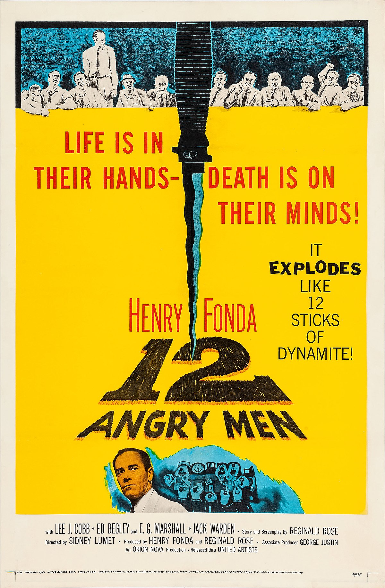

1. The Godfather
- Director: Francis Ford Coppola
- Genre: Crime, Drama
- Year of Release: 1972

2. Schindler's List
- Director: Steven Spielberg
- Genre: Biography, Drama, History
- Year of Release: 1993


4. 12 Angry Men
- Director: Sidney Lumet
- Genre: Crime, Drama
- Year of Release: 1957
5. Interstellar
- Director: Christopher Nolan
- Genre: Adventure, Drama, Sci-Fi
- Year of Release: 2014